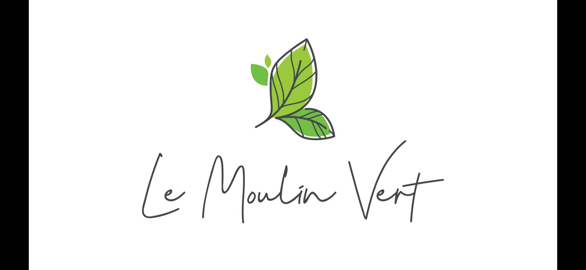
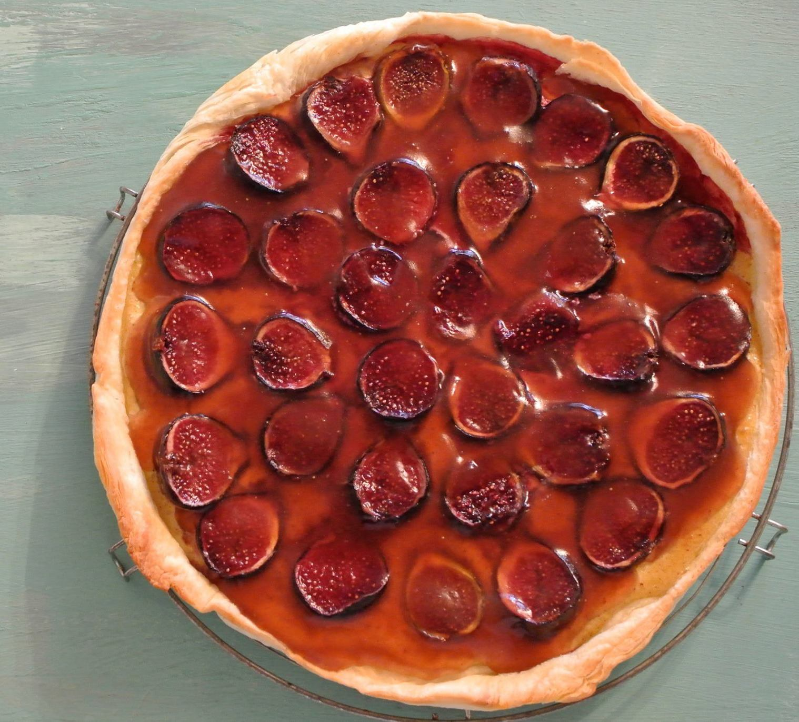

Bienvenue sur le site du Moulin Vert
Le Moulin Vert est une petite épicerie bio
Le moulin date des années 50 et
nous y moulons des céréales bio
telles que
des anciennes variétés de blé et de l’épeautre.
Nous préparons divers
tartes, gâteaux et pâtisseries
sur commande.
Les pâtisseries vegan
sont notre spécialité.
Notre assortiment :
- Fruits et légumes, de la région quand c’est possible
- Farine d’épeautre et de blé de notre moulin
- Fruits secs et diverses noix
- Pain et pâtisseries fait maison
- Produits de nettoyage écologiques
- Produits cosmétiques bio
